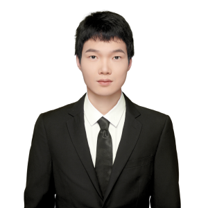
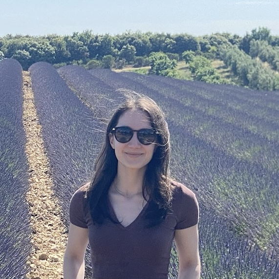
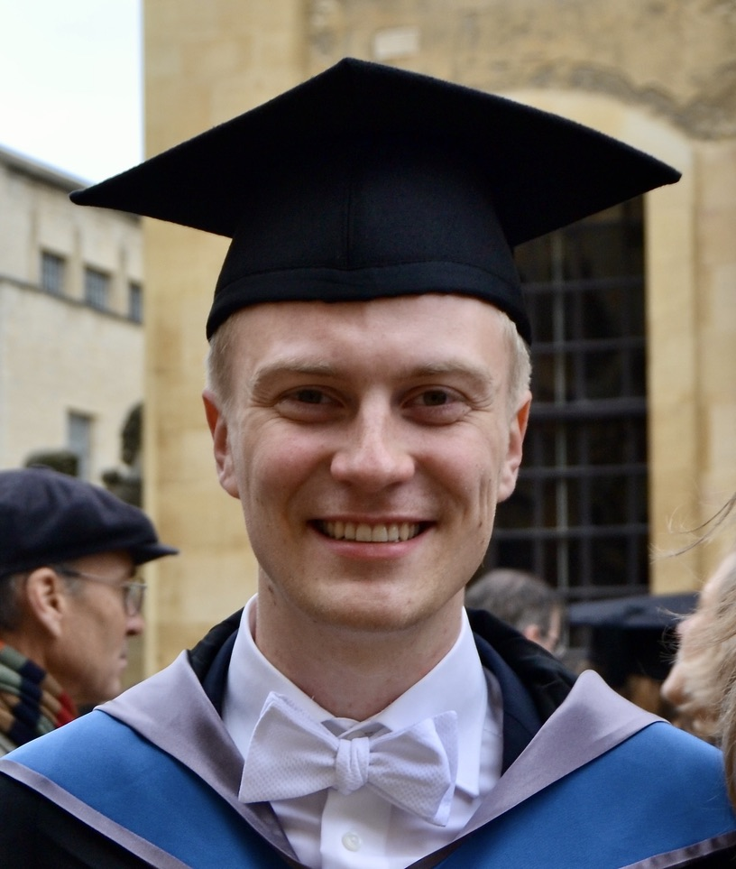

Current PhD Students
RUTGERS UNIVERSITY


Collaborative PhD Students

Buse Şen ↗
EPFL · 2023–2026
Minda Zhao ↗
Georgia Tech · 2022–2024

Vinzenz Thoma ↗
ETH Zurich and University of Zurich · 2023–2024
Yves Rychener ↗
EPFL · 2023–2025
Alumni
- Baiting Chen · UCLA, 2025–2026 · UCLA Statistics PhD
- Yanbo Qiao · Nankai University, 2025–2026 · University of Wisconsin–Madison ISyE PhD
- Filip Ilic · ETH Zurich master's thesis, 2025 · Swiss healthcare sector
- Jie-Ming Li · ETH Zurich master's thesis, 2024 · Research assistant at ETH Zurich
- Xiaoshuang Wang · ETH Zurich master's thesis, 2023 · Georgia Tech ISyE PhD
- Liang Zhang · ETH Zurich master's thesis, 2021 · ETH Zurich Computer Science PhD